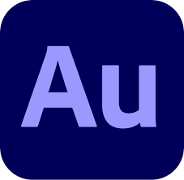
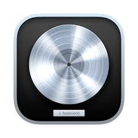

Produktinformasjon:
Utforsk vårt utvalg av førsteklasses podkast- og dubbingutstyr. Oppdag hvordan riktig utstyr kan forbedre lydkvaliteten og gi en profesjonell touch til dine prosjekter.
Når du skal kjøpe utstyr til podkast/dubbing er det viktig å tenke på hva du skal bruke det til. Om du skal bruke det til å spille inn podcast eller dubbe videoer, er det viktig å ha en god mikrofon. En god mikrofon er en som kan ta opp god lyd, og som ikke er for stor eller for liten.
Vi anbefaler følgende utstyr til podkast/dubbing:

Om HyperX Cloud II
Når du skal velge et headset til podkast/dubbing er det viktig å tenke på hva du skal bruke det til. Om du skal bruke det til å spille inn podcast eller dubbe videoer, er det viktig å ha en god lyd. HyperX Cloud II er en av de beste headsetene for lyd, og den er også svært komfortabel å bruke. Den har en god balanse mellom bass og diskant, og den er også svært lett å bruke. Vi anbefaler HyperX Cloud II til alle som skal bruke headset til podkast/dubbing.

Om RØDE NT-USB
RØDE NT-USB er et utmerket valg for podkast/dubbing takket være sin lydkvalitet. Denne mikrofonen tilbyr klar og naturlig lyd, noe som gjør den ideell for både nybegynnere og profesjonelle. Den kommer med et pop-filter for å redusere uønsket støy, og er enkel å sette opp med USB-tilkobling. Vi anbefaler RØDE NT-USB til alle som ønsker å forbedre deres lydopptak.

Om Blue Yeti
Blue Yeti er en av de mest populære mikrofonene for podkast/dubbing. Den er enkelt å bruke, og den gir en god lyd. Den har en god balanse mellom bass og diskant, og den er også svært lett å bruke. Vi anbefaler Blue Yeti til alle som skal starte en podcast eller dubbe videoer.
Når du skal lage en podcast eller dubbe en video, er det viktig å ha en god programvare. En god programvare kan hjelpe deg med å redigere lyden, og gi deg en profesjonell touch.
Vi anbefaler følgende programvare:
Mer om Audacity
Audacity er en gratis og åpen kildekode lydredigeringsprogramvare som er populær blant nybegynnere. Den tilbyr et enkelt grensesnitt og et bredt spekter av funksjoner for opptak og redigering av lyd. Audacity støtter flere spor og ulike lydformater, noe som gjør det til et allsidig verktøy for lydprosjekter. Den er også enkel å bruke, og har en god manual som kan hjelpe deg med å komme i gang.
Mer om Adobe Audition
Adobe Audition er en profesjonell lydredigeringsprogramvare som gir avanserte verktøy for miksing, redigering og restaurering av lyd. Det er en del av Adobe Creative Cloud og tilbyr sømløs integrasjon med andre Adobe-produkter. Programmet er ideelt for de som ønsker å lage podcaster eller dubbe videoer på et profesjonelt nivå. Den har en god manual som kan hjelpe deg med å komme i gang.
Mer om Logic Pro X
Logic Pro X er en profesjonell musikkproduksjonsprogramvare utviklet av Apple. Den tilbyr et omfattende sett med verktøy for musikkproduksjon, inkludert MIDI-redigering, lydopptak og miksing. Logic Pro X er spesielt populær blant musikere og produsenter som jobber på Mac-plattformen. Den har en god manual som kan hjelpe deg med å komme i gang.

Mer om Ableton Live
Ableton Live er en profesjonell musikkproduksjons- og opptaksprogramvare kjent for sine liveopptaksfunksjoner og kreative arbeidsflyt. Den brukes ofte av artister for liveopptredener og studioinnspillinger. Ableton Live gir en unik tilnærming til musikkproduksjon med sin Session View, som tillater rask eksperimentering og improvisasjon. Den har en god manual som kan hjelpe deg med å komme i gang.
HiTEK AS er et firma som ble startet i 2020 av vår daglig leder, Alf Viggo Torgalsbøen. Vi har siden starten vokst seg til å bli en av de ledende leverandørene av IT-produkter i Norge. Vårt mål er å gi våre kunder de beste produktene og tjenestene, samtidig som vi har en god pris. Vi har en stor erfaring med å levere produkter til privatpersoner og bedrifter, og vi har en god kundeservice.

Alf Viggo Torgalsbøen
Daglig leder